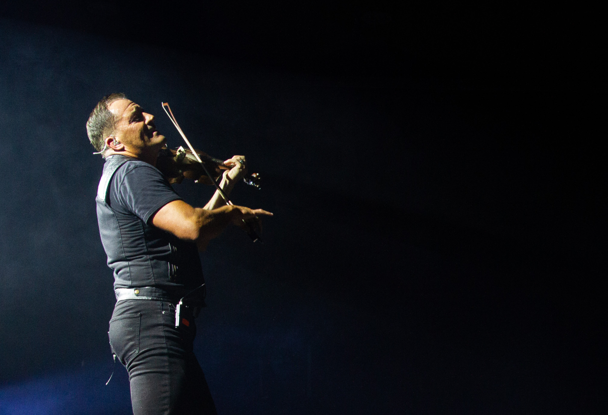

Nr 5
Konsept: Eksperimentell tilnærming
En utfordrende og eksperimentell film som bryter konvensjoner gjennom uvanlige vinkler, uortodoks editing og innovativ lyddesign.
Kreativ utforsking
Prosjektet tillater risiko og eksperimentering — testing av nye teknikker innen kamera, timing og visuell effekt. Målet er å finne nye måter å fortelle historie på.
Teknisk innovasjon
Gjennom rytmisk klipp, ukonvensjonelle overganger og dynamic framing skappes en film som utfordrer seeren og presenterer filmmakerens unike perspektiv.